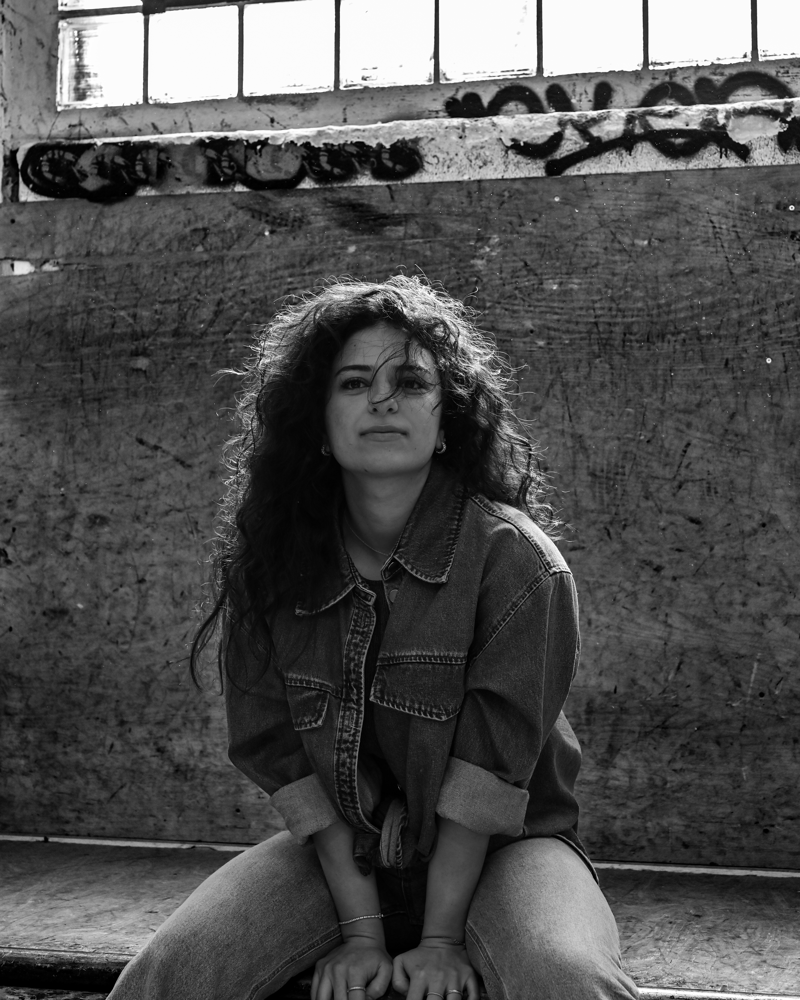

Der Moment,
in dem alles
andere still wird.
Melis Bulut begleitet euren Tag mit Musik, die für genau diesen einen Moment gemacht ist — nicht für irgendeinen.
Termin per WhatsApp anfragenAntwort meist innerhalb eines Tages

„Für drei Minuten war der ganze Raum still —
und dann haben alle geweint."

Über Melis
Ich singe nicht
für euch.
Ich singe mit euch.
Ich begleite Hochzeiten als Sängerin — aber vor allem als jemand, der genau hinhört. Bevor ich eine Note singe, will ich wissen, wer ihr seid: wie ihr euch kennengelernt habt, welches Lied bei eurem ersten Date lief, wovor ihr euch am meisten fürchtet, wenn ihr an diesen Tag denkt.
Daraus entsteht die Musik eures Tages — nicht aus einer Playlist von der Stange.
Musikalische Regie
Es geht nicht darum,
was gesungen wird.
Es geht darum, wann.
Die meisten Hochzeitssänger bieten euch eine Songliste. Ich gestalte den musikalischen Bogen eures Tages — wo Stille wichtiger ist als ein Lied, wo ein Song sich langsam aufbaut, wo der Raum etwas fühlen soll, bevor er es merkt.
-
01
Vor der Zeremonie
Ruhige, unaufdringliche Stücke, die eintreffende Gäste einstimmen — ohne sich in den Vordergrund zu drängen.
-
02
Der Einzug
Der Moment, der am längsten in Erinnerung bleibt. Zeitpunkt, Lautstärke und Stille werden bewusst gesetzt.
-
03
Der erste Tanz
Live gesungen, oft in einer reduzierten Fassung, die dem Moment Raum lässt, statt ihn zu füllen.
Klang & Repertoire
Von Zärtlich bis Ausgelassen
Akustisch oder mit Band, klassisch interpretiert oder ganz neu. Hört selbst rein:
Akustisch Pop & Soul Klassiker neu interpretiert Türkische Klassiker Jazz-Standards
Alle Songs stammen aus einem bereits bestehenden Repertoire — daraus wählt ihr die Titel aus, die zu eurem Tag passen.
Stimmen von Paaren
Ihr werdet euch nicht an jedes Wort erinnern, das an diesem Tag gesagt wurde. Aber an das Gefühl, als die Musik einsetzte — daran schon.
So einfach ist es
Drei Schritte bis zur Zusage
-
01
Nachricht schreiben
Datum, Ort und ein paar Worte zu euch — per WhatsApp, ganz unkompliziert.
-
02
Kurzes Gespräch
Wir sprechen über euren Tag, eure Musikwünsche und was euch wichtig ist.
-
03
Termin gesichert
Ihr erhaltet eine schriftliche Bestätigung — euer Datum ist reserviert.
Häufige Fragen
Wie weit im Voraus sollten wir buchen?
Beliebte Termine, besonders an Wochenenden zwischen Mai und September, sind oft 8–12 Monate im Voraus vergeben. Kurzfristige Anfragen lohnen sich trotzdem immer — fragt einfach nach.
Reist Melis auch außerhalb der Region an?
Ja. Auftritte in ganz Deutschland und im deutschsprachigen Ausland sind möglich, Reisekosten werden individuell besprochen.
Können wir eigene Songwünsche einbringen?
Unbedingt. Euer Wunschlied für den ersten Tanz oder den Einzug ist der Ausgangspunkt jeder Zusammenarbeit.
Tritt Melis solo auf oder mit Band?
Beides ist möglich — von akustischer Gitarrenbegleitung bis zum vollen Bandsetup, je nach Location und Wunsch.
Was passiert, wenn Melis kurzfristig ausfällt?
Über ein verlässliches Netzwerk erfahrener Musikerinnen und Musiker ist im unwahrscheinlichen Fall eines Ausfalls ein gleichwertiger Ersatz organisiert.
Euer Datum wartet
nicht ewig.
Schreibt Melis noch heute und sichert euch euren Wunschtermin.
Verfügbarkeit für unser Datum prüfen